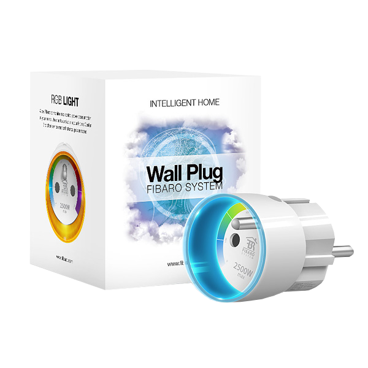

FIB_FGWPE-101
Wall Plug with Metering Function Type E
Firmware Version
: 22.22
|
 |
Quick Start
A This device is a wireless Z-Wave actuator.
The inclusion of the device is confirmed by a tripple click on the button. Additionally the device supports the autoinclusion
function and will confirm inclusion when not manually included and plugged into an outlet. A red light on the LED ring confirms inclusion.
The exclusion follows the same process but is recommended to use the Reset function to remove devices from the network.
Please refer to the chapters below for detailed information about all aspects of the products usage.
What is Z-Wave?
This device is equipped with wireless communication complying to the Z-Wave standard.
Z-Wave is the international standard for wireless communication in smart homes and buildings.
It is using the frequency of 868.42 MHz to realize a very stable and secure communication.
Each message is reconfirmed (two-way communication) and every mains powered node can act as a
repeater for other nodes (meshed network) in case the receiver is not in direct wireless
range of the transmitter.
Z-Wave differentiates between Controllers and Slaves. Slaves are either sensors
(S) transmitting metered or measured data or actuators (A) capable to execute an action.
Controllers are either static mains powered controllers (C) also referred to as gateways or mobile battery
operated remote controls (R).
This results in a number of possible communication patterns within a Z-Wave network that are partly
or completely supported by a specific device.

- Controllers control actuators
- Actuators report change of status back to controller
- Sensors report change of status of measured values to controller
- Sensors directly control actuators
- Actuators control other actuators
- Remote controls send signals to static controllers to trigger scenes or other actions
- Remote controls control other actuators.
There are two different role a controller can have. There is always one single primary controller that is managing
the network and including/excluding devices. The controller may have other functions - like control buttons - as well.
All other controllers don't manage the network itself but can control other devices. They are called secondary controllers.
The image also shows that its not possible to operate a sensor just from a remote control. Sensors only communicate
with static controllers.
Product description
The Fibar plug with power metering function is a very compact stylish and intelligent remotely operable plug for
wall outlets of Type E. It can be applied to switch loads up to 2500 W and will meter the acutal and accumulated power
consumption of this load. A LED ring right on the device is used to indicate switching and power load stages or general alarm conditions,
but can not be tuned up to all colors of the LED spectrum.
Before Device is installed
Please read carefully the enclosed user manual before installation of the radio-actuator, in
order to ensure an error-free functioning.
ATTENTION: only authorized technicians under consideration of the country-specific installation
guidelines/norms may do works with 230 Volt mains power. Prior to the assembly of the product, the voltage
network has to be switched off and ensured against re-switching.
The product is permitted only for proper use as specified in the user manual. Any kind of guarantee claim has
to be forfeited if changes, modifications or painting are undertaken. The product must be checked for damages
immediately after unpacking. In the case of damages, the product must not be operated in any case.
If a danger-free operation of the equipment cannot be assured, the voltage supply has to be interrupted
immediately and the equipment has to be protected from unintended operation.
Installation Guidelines
The plug can be plugged into every wall outlet for Plug-Type E.
It is IP20 rated and can therefore only be used in dry environments. Do not locate the device facing
direct sunlight, humid or dusty place. The suitable ambient temperature for the device is 0°C ~ 40°C.
Plugs must not be stacked and operated.
Behavior within the Z-Wave network
I On factory default the device does not belong to any Z-Wave network. The device needs to join an existing
wireless network to communicate with the devices of this network. This process is called Inclusion.
Devices can also leave a network. This process is called Exclusion. Both processes are initiated by the
primary controller of the Z-Wave network. This controller will be turned into exclusion respective inclusion mode.
Please refer to your primary controllers manual on how to turn your controller into inclusion or exclusion mode.
Only if the primary controller is in inclusion or exclusion mode, this device can join or leave the network.
Leaving the network - i.e. being excluded - sets the device back to factory default.
If the device already belongs to a network, follow the exclusion process before including it in your network.
Otherwise inclusion of this device will fail. If the controller being included was a primary controller, it has to be reset
first.
The inclusion of the device is confirmed by a tripple click on the button. Additionally the device supports the autoinclusion
function and will confirm inclusion when not manually included and plugged into an outlet. A red light on the LED ring confirms inclusion.
The exclusion follows the same process but is recommended to use the Reset function to remove devices from the network.
Operating the device
The device is operared by the little button on the device or by wireless Z-Wave commands. The function of the LED ring can be defined using
configuration parameters. It is possible to signal overcurrent or general alarm conditions of the Z-Wave network. In parallel the device
indicates with purple light, when the ambient temperature exceeds 55 °C.
Associations
A Z-Wave devices control other Z-Wave devices. The relationship between one device controlling another device is
called association. In order to control a different device, the controlling device needs to maintain a list of
devices that will receive controlling commands. These lists are called association groups and they are always
related to certain events (e.g. button pressed, sensor triggers, ...). In case the event happens all devices stored
in the respective association group will receive a common wireless command.
Association Groups:
| 1 |
plug status. Will send BASIC command whenever the status of the plug changes
(max. nodes in group: 5)
|
| 2 |
send commands depending on current load
(max. nodes in group: 5)
|
| 3 |
reports relais status to one device
(max. nodes in group: 1)
|
Configuration Parameters
Z-Wave products are supposed to work out of the box after inclusion, however certain configuration can adapt the
function better to user needs or unlock further enhanced features.
IMPORTANT: Controllers may only allow to configure signed values. In order to set values in the range 128 … 255 the value
sent in the application shall be the desired value minus 256. For example: to set a parameter to 200 it may be needed to set
a value of 200 minus 256 = minus 56. In case of two byte value the same logic applies: Values greater than 32768 may
needed to be given as negative values too.
Always On Function
(Parameter Number 1, Parameter Size 1)
Once activated, Wall Plug will keep a connected device constantly ON, will stop reacting to alarm frames and B-button push
| Value |
Description |
| 0 |
active |
| 1 |
inactive
(Default)
|
Remember device status after power failure
(Parameter Number 16, Parameter Size 1)
Define how will the Plug react after the power supply is back on
| Value |
Description |
| 0 |
Wall Plug does not memorize its state after a power failure. Connected device will be off after the power supply is reconnected |
| 1 |
Wall Plug memorizes its state after a power failure
(Default)
|
Reaction to Alarm
(Parameter Number 34, Parameter Size 1)
defines the alarm types the plug reacts to. Set value may be a sum of available values, e.g. set value = 5 means the Plug will respond to general alarm (1) and CO alarm (4).
| Value |
Description |
| 1 |
General Alarm |
| 2 |
Smoke Alarm |
| 4 |
CO Alarm |
| 8 |
CO2 Alarm |
| 16 |
High Temperature Alarm |
| 32 |
Flood Alarm |
| 63 |
All Alarms
(Default)
|
Response to Alarm Frames
(Parameter Number 35, Parameter Size 1)
defines the response of the plug to an alarm. In "always on" mode this setting is ignored.
| Value |
Description |
| 0 |
No Reaction
(Default)
|
| 1 |
Turn on connected device, LED ring signals alarm through time set in Parameter 39 or until alarm is turned off |
| 2 |
Turn off connected device, LED ring signals alarm through time set in Parameter 39 or until alarm is turned off |
| 3 |
Change Device state every second. In alarm mode the plug does not report status changes, power changes and ignores alarm frames. After alarm time (Parameter 39) has passed or alarm was canceled device is set back to previous state |
Alarm duration
(Parameter Number 39, Parameter Size 2)
Wall Plug's alarm mode duration. If a device sending an alarm frame through the Z-Wave network sets alarm duration as well, this parameter's settings are ignored.
| Value |
Description |
| 0
—
65535 |
sec
(Default 600)
|
Immediate Power Report
(Parameter Number 40, Parameter Size 1)
Parameter defines by how much power load must change, in percents, to be reported to the main controller, with the highest priority in the Z-Wave network. By default, Fibaro Wall Plug immediately sends power report if the power load changes by 80%. NOTE: In extreme cases, reports may be sent every second if rapid and significant power load changes occur. Frequent reporting may overload the Z-Wave network so these parameter's settings should reflect significant changes in power load only.
| Value |
Description |
| 1
—
100 |
%
(Default 80)
|
Standard Power Load Reporting
(Parameter Number 42, Parameter Size 1)
defines the change in power consumption to cause an unsolicided power report
| Value |
Description |
| 0
—
100 |
%
(Default 15)
|
Power Reporting Frequency
(Parameter Number 43, Parameter Size 1)
defines the frequency to send an unsolicided power report
| Value |
Description |
| 1
—
254 |
sec
(Default 30)
|
| 255 |
Reports will be sent only as a result of parameter 47 settings or in case of polling |
Reporting Changes in energy consumed by controlled devices
(Parameter Number 45, Parameter Size 1)
defines needed change of power draw to generate an unsoliceded power report
| Value |
Description |
| 1
—
254 |
* 10 W
(Default 16)
|
| 255 |
Changes in consumed energy will not be reported. Reports will be sent only in case of polling. |
Time Period between reports on power and energy consumption
(Parameter Number 47, Parameter Size 2)
defines the time pweriod between reports sent when changes in power load have nit been reported.
| Value |
Description |
| 1
—
65534 |
sec
(Default 3600)
|
| 65535 |
No periodic reports. Reports will be sent only in case of power load / energy consumption changes (parameters 40,42,43,45) or in case of polling. |
Metering Energy consumed by Power Plug itself
(Parameter Number 49, Parameter Size 1)
defines whether or not the own power consumption shall be recorded.
| Value |
Description |
| 0 |
inactive
(Default)
|
| 1 |
active |
DOWN value
(Parameter Number 50, Parameter Size 1)
Lower power threshold, used in parameter 52 (value cannot be higher than a value specified in parameter 51)
| Value |
Description |
| 0
—
168 |
0.1W
(Default 44)
|
UP value
(Parameter Number 51, Parameter Size 2)
Upper power threshold, used in parameter 52 (value cannot be lower than a value specified in parameter 50)
| Value |
Description |
| 16
—
25000 |
0.1W
(Default 500)
|
Action in case of exceeding defined power values (Parameter 50/51)
(Parameter Number 52, Parameter Size 1)
definies the action for devices in association group 2 when power trigger value is reached.
| Value |
Description |
| 0 |
inactive |
| 1 |
turns associated devices ON when when power drops below DOWN value |
| 2 |
turns associated devices OFF when when power drops below DOWN value |
| 3 |
turns associated devices ON when when power drops below UP value |
| 4 |
turns associated devices OFF when when power drops below UP value |
| 5 |
Option 1 and 4 combined |
| 6 |
Option 2 and 3 combined
(Default)
|
Power Load Trigger
(Parameter Number 60, Parameter Size 2)
defines the power load that will make the plug flash purple (only when parameter 61 is set to 0 or 1)
| Value |
Description |
| 1000
—
32000 |
0.1W
(Default 25000)
|
LED Ring Color when device is on
(Parameter Number 61, Parameter Size 1)
defines the color of the LED ring in ON state
| Value |
Description |
| 0 |
changes in predefined steps according to power load |
| 1 |
changes continously according to power load using full spectrum of LED color
(Default)
|
| 2 |
White |
| 3 |
Red |
| 4 |
Green |
| 5 |
Blue |
| 6 |
Yellow |
| 7 |
Cyan |
| 8 |
Magenta |
| 9 |
Off |
LED Ring Color when device is off
(Parameter Number 62, Parameter Size 1)
defines the color of the LED ring in OFF state
| Value |
Description |
| 0 |
LED ring is illuminated with a color corresponding to the last measured power, before the controlled device was turned off |
| 1 |
White
(Default)
|
| 2 |
Red |
| 3 |
Green |
| 4 |
Blue |
| 5 |
Yellow |
| 6 |
Cyan |
| 7 |
Magenta |
| 8 |
Off |
LED Ring Color on Z-Wave Alarms
(Parameter Number 63, Parameter Size 1)
defines the color of the LED ring on Alarm State
| Value |
Description |
| 0 |
No Change of color |
| 1 |
flashes red/blue/white
(Default)
|
| 2 |
White |
| 3 |
Red |
| 4 |
Green |
| 5 |
Blue |
| 6 |
Yellow |
| 7 |
Cyan |
| 8 |
Magenta |
| 9 |
Off |
Overload Safety Switch
(Parameter Number 70, Parameter Size 2)
Allows turning off a device in case of overloading. This will even happen in "always on" mode. Device can be turned back on using the button on the device or sending a ON command.
| Value |
Description |
| 16
—
65535 |
0.1W
(Default 65535)
|
Command Classes
Supported Command Classes
- Basic
(version 1)
- Association
(version 2)
- Version
(version 1)
- Alarm
(version 0)
- Manufacturer Specific
(version 1)
- Configuration
(version 1)
- Multilevel Sensor
(version 2)
- Meter
(version 2)
- Powerlevel
(version 1)
- Firmware Update Meta Data
(version 1)
- Alarm Sensor
(version 0)
- Binary Switch
(version 1)
Technical Data
| Power Supply |
230V ~50-60 Hz |
| Attachable Loads |
2500 W, lower on power factor much different than 1.0 |
| IP Rating |
20 |
| Wireless Range |
up to 50 m outside and 30 m inside buildings |
| Explorer Frame Support |
Yes |
| SDK |
4.55 |
| Device Type |
Slave with routing capabilities |
| Generic Device Class |
Binary Switch |
| Specific Device Class |
Binary Power Switch |
| Routing |
Yes |
| FLiRS |
No |
| Firmware Version |
22.22 |
Explanation of Z-Wave specific terms
-
Controller — is a Z-Wave device with capabilities to manage the network. Controllers are typically Gateways,
Remote Controls or battery operated wall controllers.
-
Slave — is a Z-Wave device without capabilities to manage the network. Slaves can be sensors, actuators
and even remote controls.
-
Primary Controller — is the central organizer of the network. It must be a controller. There can be only one primary controller in a Z-Wave network.
-
Inclusion — is the process of bringing new Z-Wave devices into a network.
-
Exclusion — is the process of removing Z-Wave devices from the network.
-
Association — is a control relationship between a controlling device and a controlled device.
-
Wakeup Notification — is a special wireless message issued by a Z-Wave device to annonces that is
is able to communicate.
-
Node Information Frame — is a special wireless message issued by a Z_Wave device to announce its capabilities and functions.
Disposal Guidelines
The product does not contain hazardous chemicals.
Do not dispose of electrical appliances as unsorted municipal waste, use separate collection facilities.
Contact your local government for information regarding the collection systems available. If electrical appliances
are disposed of in landfills or dumps, hazardous substances can leak into the groundwater and get into the food chain,
damaging your health and well-being.